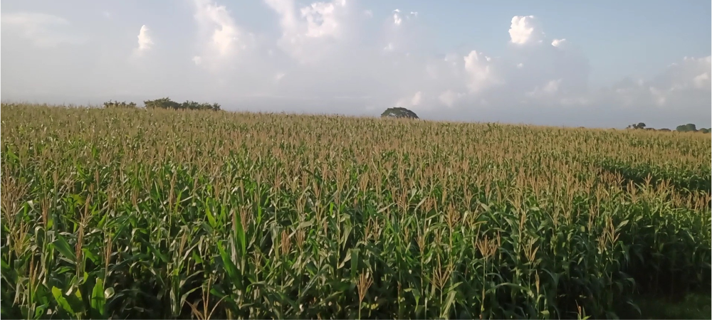

Olachea Group
19 Sep, 2024
Securing Your 2026 Supply of High-Quality, Traceable Non-GMO White Corn
For food industry purchasing managers and importers in the United States, sourcing raw materials isn't just about price and volume; it's about reliability, safety, and traceability. The demand for clean-label, non-transgenic products is higher than ever, and meeting international standards for food safety is non-negotiable.
The Foundation of Quality:
The Foundation of Quality: Our Shavuot
System S360
Olachea Group is proud to announce the pre-sale for our 2026 harvest of premium, non-GMO white corn, cultivated to meet the rigorous demands of the global food industry. This is more than just corn; it's a guarantee of quality from seed to shipment.
Quality Assurance
- • DON levels below 1 ppm (FDA & EU compliant)
- • Non-GMO certified by SAGARPA & SENASICA
- • ≤ 14% moisture content
- • Premium milling quality
Sustainable Practices
- • Certified bio-inputs only
- • Integrated pest management
- • Water conservation systems
- • Soil health monitoring
Premium Quality Characteristics
Our production is centered on elite white corn selected for its superior agronomic performance and ideal nutritional profile for high-quality food production. Each kernel is a testament to our commitment to excellence.
Key Quality Indicators
Superior Milling Quality
High starch content and dense, uniform grains for excellent flour yield
Exceptional Performance
Excellent water absorption for traditional processes like nixtamalization
Enhanced Nutrition
Rich in complex carbohydrates and natural antioxidants
Extended Shelf Life
Vitreous grain structure minimizes breakage and moisture retention
Your 2025 Supply Partner
We understand the critical importance of reliability in your supply chain. Our 2026 pre-sale offer is designed for seamless procurement with complete peace of mind.
Production Details
- • Available Volume: 500 hectares
- • Estimated Yield: 6,000-7,000 tons
- • Harvest Window: February to May 2026
- • Certifications: Non-GMO (SAGARPA & SENASICA)
Logistics & Support
- • Optimized delivery scheduling
- • Flexible contract options
- • Technical advisory services
- • Dedicated account management
In a global market that values natural products and food security, partnering with a reliable supplier is crucial. Olachea Group is ready to be that partner, delivering premium non-GMO white corn with uncompromising quality and traceability.
— Olachea Group Leadership Team
Secure Your 2026 Supply
Don't leave your 2026 supply chain to chance. Partner with Olachea Group for premium non-GMO white corn that meets the highest standards of quality and traceability.
Ready to secure your 2026 supply?
Contact our team today to discuss your specific requirements and secure your allocation.
Limited pre-sale quantities available
Olachea Group
Premium Agricultural Exports
As a leading agricultural exporter, we're committed to sustainable farming practices and delivering the highest quality non-GMO white corn. Our Shavuot System S360 ensures full traceability from field to shipment, giving you complete confidence in your supply chain.
With over 15 years of experience in agricultural exports, our team is committed to delivering the highest quality non-GMO white corn to global markets.